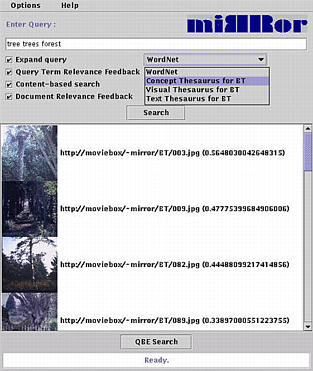

This screenshot demonstrates how an initial query can be expanded using various types of thesauri. The "concept thesaurus" used in this example has been constructed automatically, using co-occurrence statistics between clusters in feature spaces and words in text annotations. Such a thesaurus provides associative links between visual properties and textual properties of multimedia objects. Notice that this may also be used to assist users with annotation tasks.
| Prev | Next |
 Home: DEMO - The Mirror MMDBMS architecture
Home: DEMO - The Mirror MMDBMS architecture
Last updated: December 9, 1999
Maintained by: arjen@acm.org